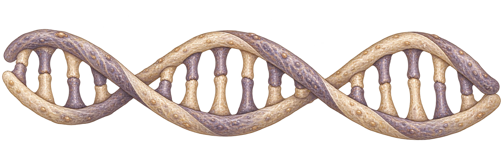
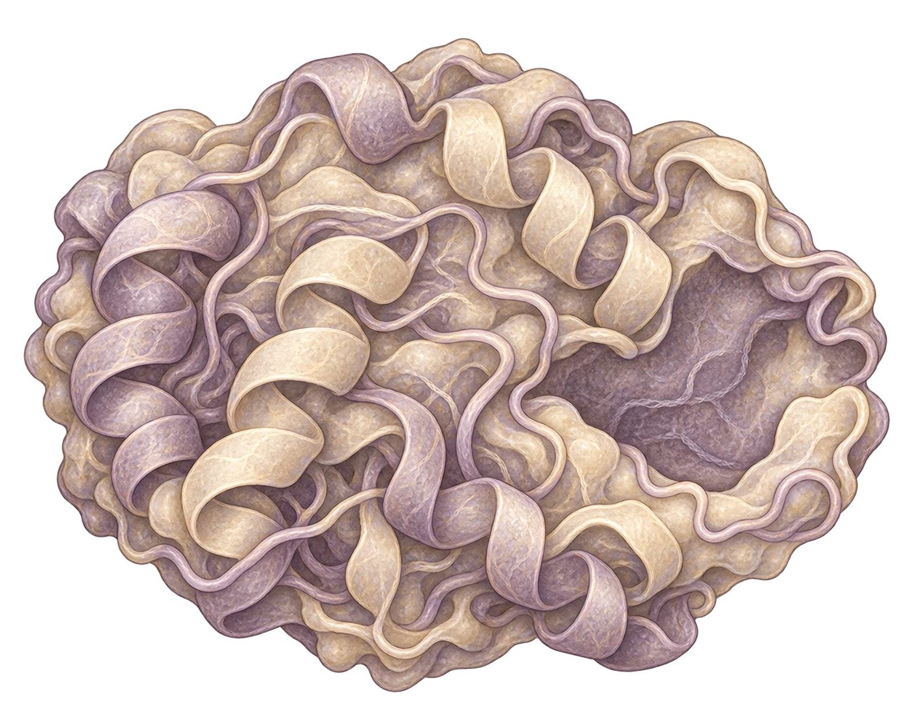

A world inside a cell
A short introduction to the world behind our molecular biology and microbiology games. Meet the cell, its key parts, and the instructions that help it work.


Following the instructions
This order helps us learn. It does not show how a real nucleus is built.
Select an illustration, then its job.
Choose a part above.
Choose a part to begin.
A short introduction to the world behind our molecular biology and microbiology games. Meet the cell, its key parts, and the instructions that help it work.